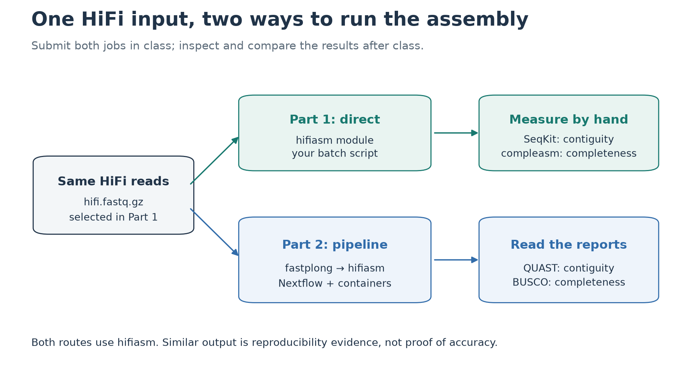
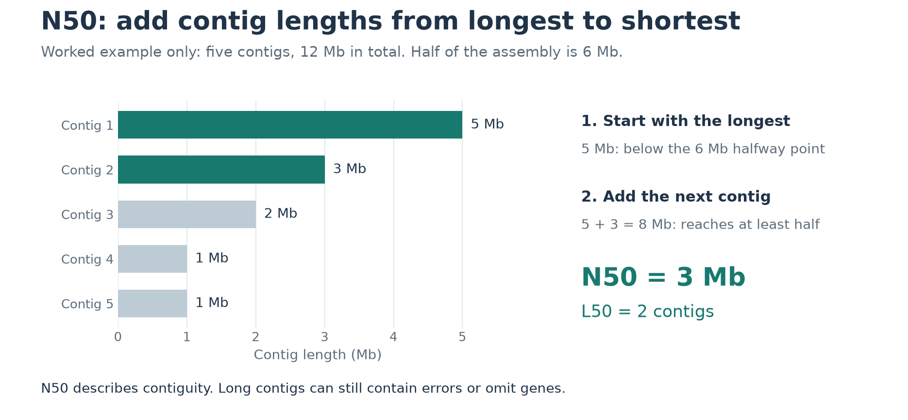
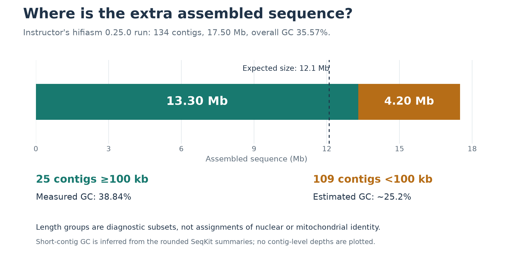

Week 3, Session 1
Genome Assembly
Submit both batch jobs in class: the direct assembly in Part 1, then the same assembly as a pipeline in Part 2. They keep running after you leave. Everything after that is done after class, once both jobs have finished.
Before You Start
srun --partition=batch --nodes=1 --ntasks=1 --cpus-per-task=8 \
--mem=32G --time=03:00:00 --pty bash
hostname # must NOT say login-p0x
export COURSE=/cluster/tufts/c27sp1bio0196
export MYWORK="$COURSE/$USER"
export SHARED=$COURSE/shared/wk3
export FETCH=$MYWORK/week-01/session-02/fetch
export GENOME=12100000 # expected genome size in bases
mkdir -p $MYWORK/week-03/session-01/hifiasm && cd $MYWORK/week-03/session-01/hifiasm
# the PacBio HiFi reads you cleaned with fastplong in Week 2
export HIFI=$(ls $MYWORK/week-02/session-02/trimmed/*SRR18210286*.filt.fq.gz 2>/dev/null)
ls -lh "$HIFI"These are the same paths as Weeks 1 and 2: your work under $MYWORK, shared course files under $COURSE/shared. If the allocation announced in class differs, change COURSE to match.
Today's folder, $MYWORK/week-03/session-01, holds one subfolder per assembly route: hifiasm/ for the direct assembly in Part 1, and genomeassembler/ for the pipeline in Part 2. Keeping them apart means neither run can overwrite the other's files. The HiFi reads both routes use sit beside them, as hifi.fastq.gz. You are now in hifiasm/.
nf-core/genomeassembler runs the same two steps in the same order: fastplong on the reads, then hifiasm.
If $HIFI is empty, you did not finish Week 2 Part 2. Use the reads you downloaded in Week 1 instead. In Week 2, fastplong removed almost nothing from the HiFi reads, so the assembly will be essentially the same:
export HIFI=$(ls $FETCH/results/fastq/*SRR18210286*.fastq.gz 2>/dev/null)
ls -lh "$HIFI"If that is empty too, your Week 1 download did not finish. Use the staged copy:
export HIFI=$(ls $SHARED/fallback_hifi/*.fastq.gz | head -1)
ls -lh $HIFIPart 1: Submit The Direct Assembly
1.1 Load The Tools
module load hifiasm seqkit compleasm
module listEvery tool in this course is an environment module. module avail <tool> shows the versions installed; write down the ones you used.
1.2 Use All HiFi Reads
Use all the cleaned HiFi reads selected in $HIFI. This run contains about 4.58 billion bases for a 12.1 Mb genome, or roughly 379× coverage. Subsampling can reduce runtime and memory use, but it is not required for this lab: the batch job can run after class.
Create a link with a short, stable name in session-01, where both routes can find it. The link points to the original file without copying the sequencing data:
ln -sf "$HIFI" $MYWORK/week-03/session-01/hifi.fastq.gz
ls -lhL $MYWORK/week-03/session-01/hifi.fastq.gzBoth assembly routes will use this same input. More coverage does not guarantee a better assembly or resolve every repeat; you will evaluate the results rather than assuming that extra reads make them correct.
1.3 Submit It
Write the script, its logs and its outputs in hifiasm/. SLURM creates the log files relative to the folder you run sbatch from, so change into hifiasm/ first:
mkdir -p $MYWORK/week-03/session-01/hifiasm/logs
cd $MYWORK/week-03/session-01/hifiasm
cat > assemble.sh <<'EOF'
#!/bin/bash
#SBATCH --job-name=hifiasm
#SBATCH --partition=batch
#SBATCH --cpus-per-task=16
#SBATCH --mem=48G
#SBATCH --time=12:00:00
#SBATCH --output=logs/%x_%j.out
#SBATCH --error=logs/%x_%j.err
# load what the job needs inside the script, so it never depends on the shell that submitted it
module load hifiasm
set -euo pipefail
export COURSE=/cluster/tufts/c27sp1bio0196
export MYWORK="$COURSE/$USER"
cd "$MYWORK/week-03/session-01/hifiasm"
hifiasm -i -o asm -t ${SLURM_CPUS_PER_TASK} $MYWORK/week-03/session-01/hifi.fastq.gz
# hifiasm writes GFA; convert the primary contigs to FASTA
awk '/^S/{print ">"$2"\n"$3}' asm.bp.p_ctg.gfa | fold > asm.p_ctg.fa
EOF
bash -n assemble.sh
sbatch assemble.sh
squeue --meTwo lines in that script are worth understanding. module load hifiasm sits inside the script even though you loaded it interactively: sbatch passes on the environment of the shell you submit from, so without it the job would work from one shell and fail from a fresh login. And because the heredoc delimiter is quoted, the script is written exactly as shown, so awk receives "\n" and prints a real newline between each contig name and its sequence.
-i tells hifiasm to ignore earlier .bin cache files with the same output prefix. This ensures that an earlier trial with fewer reads is not reused for the full-read assembly. It recomputes the assembly without requiring you to delete those files.
Question 1. Why does the script use ${SLURM_CPUS_PER_TASK} instead of writing -t 16?
Answer
So the thread count can never disagree with what SLURM allocated. If you later change --cpus-per-task and forget to change the hard-coded number, you either waste cores you paid for or oversubscribe the node and slow everything down.
This is the same principle as ${task.cpus} in Nextflow, which you will meet properly later.
Checkpoint 1. Everyone's direct assembly is submitted and its job ID recorded. Go straight on to Part 2.
Part 2: Submit The Same Assembly As A Pipeline
Submit this second batch job once during class, immediately after Part 1. It can run alongside the direct assembly because it writes into its own genomeassembler/ directory. You do not need the direct assembly to finish before submitting it.
Session 2 uses the assembly you made by hand, so Thursday does not depend on this run.
2.1 What nf-core/genomeassembler Does
In Week 1 you ran nf-core/fetchngs. nf-core is a community collection of Nextflow pipelines built to shared standards. Every pipeline has numbered releases, runs each tool from a fixed container, reads its inputs from a samplesheet, and records which steps ran with which software versions. When you pin a release with -r, anyone can rerun exactly the same steps later.
nf-core/genomeassembler assembles genomes from long reads, either Oxford Nanopore or PacBio. The full pipeline does far more than this lab needs:
- Assembly with
hifiasmorflye, or both combined. - Polishing, which corrects remaining base errors:
medakaordoradofor nanopore reads, orpilonwith Illumina reads. - Scaffolding, which orders and joins contigs:
LINKSorLongStitchfrom long reads,YaHSfrom Hi-C reads, orRagTagagainst a reference genome. - Quality control with QUAST, BUSCO and Merqury (Merqury needs Illumina reads).
It does not separate the two haplotypes of a diploid or polyploid genome.
Today you switch on only the parts that match Part 1, so the two routes can be compared directly:
| Step | Part 1, by hand | Part 2, pipeline |
|---|---|---|
| Clean the reads | fastplong, done in Week 2 |
fastplong, with your Week 2 settings |
| Assemble | hifiasm |
hifiasm, its default for HiFi reads |
| Contiguity | seqkit stats, after class |
QUAST |
| Completeness | compleasm, after class | BUSCO |
| Record of what ran | your notes | pipeline_info/ and an HTML report |

Figure 1. The same input and assembler, with two ways to organise the work. Compare the primary assemblies and the corresponding metrics after both jobs finish. Similar results show that the method is repeatable; they do not independently establish that the assembly is correct. Enlarge the diagram.

Two things decide what runs. The samplesheet says which reads you have: a hifireads column means HiFi data. The command-line options switch on the extra steps: here --quast and --busco. Polishing and scaffolding stay off because you do not ask for them. Give the pipeline the same full HiFi input as the direct assembly, then compare the two results after class.
2.2 Write The Samplesheet
export COURSE=/cluster/tufts/c27sp1bio0196
export MYWORK="$COURSE/$USER"
mkdir -p $MYWORK/week-03/session-01/genomeassembler/logs
cd $MYWORK/week-03/session-01/genomeassembler
cat > samplesheet.csv <<EOF
sample,hifireads,hifi_fastplong_args
yeast_hifi,$MYWORK/week-03/session-01/hifi.fastq.gz,--mean_qual 10 --length_required 1000 --unqualified_percent_limit 100
EOF
cat samplesheet.csvThe pipeline reads one row per sample. hifireads points to the same full HiFi file used by the direct assembly job. hifi_fastplong_args gives fastplong the settings you chose in Week 2; without that column, the pipeline would run fastplong with its defaults.
This heredoc is not quoted, unlike the job scripts. Here you want $MYWORK replaced by your real path as the file is written, because the pipeline needs full paths. Check that cat shows a path starting with /cluster.
2.3 Submit The Pipeline
BUSCO and QUAST are off by default in pipeline version 2.0.1. The flags --busco and --quast turn them on; do not add true after either flag. --busco_lineage fungi_odb10 selects the fungal lineage for BUSCO.
The script sets NXF_SYNTAX_PARSER=v1 so these flags are read as boolean values. With the newer v2 parser, the same flags can be read as text and fail validation with “Value is [string] but should be [boolean]”. Keep this setting inside the batch script, before nextflow run. See the Nextflow parser guidance.
cat > run_genomeassembler.sh <<'EOF'
#!/bin/bash
#SBATCH --job-name=genomeassembler
#SBATCH --partition=batch
#SBATCH --nodes=1
#SBATCH --ntasks=1
#SBATCH --cpus-per-task=2
#SBATCH --mem=8G
#SBATCH --time=24:00:00
#SBATCH --output=logs/%x_%j.out
#SBATCH --error=logs/%x_%j.err
module load nextflow singularity
export NXF_SYNTAX_PARSER=v1
export COURSE=/cluster/tufts/c27sp1bio0196
export MYWORK="$COURSE/$USER"
cd "$MYWORK/week-03/session-01/genomeassembler"
export NXF_SINGULARITY_CACHEDIR="$MYWORK/.singularity_cache"
mkdir -p "$NXF_SINGULARITY_CACHEDIR"
nextflow run nf-core/genomeassembler \
-r 2.0.1 \
-profile tufts \
--input samplesheet.csv \
--outdir results \
--busco \
--quast \
--busco_lineage fungi_odb10 \
-resume
EOF
bash -n run_genomeassembler.sh
sbatch run_genomeassembler.sh
squeue --meOn a first run, Nextflow may warn that -resume is ignored because there is no previous execution to resume. That warning does not mean parameter validation failed. Keep -resume for subsequent submissions after fixing a failed run.
This job is small on purpose. In Week 1, -profile singularity ran every step inside one large job. -profile tufts loads the Tufts cluster settings instead, so Nextflow submits each step as its own SLURM job, with the CPUs and memory that step asks for. The job you submitted only runs Nextflow, which hands out the work and waits. Once it starts, squeue --me also lists the jobs it submits; their names begin with nf-.
--busco_lineage fungi_odb10 requests an OrthoDB 10 lineage. In Part 4 you will compare its actual lineage ID and marker count with the compleasm summary from Section 3.4. Matching parameter values do not establish that both tools used the same dataset. If they differ, report that difference and defer a direct score comparison until both can be run against the same lineage release. The Tufts profile deletes work/ automatically when a run succeeds, so there is no clean-up step this time. If the run fails, work/ stays: read logs/genomeassembler_*.err and .nextflow.log, fix the problem, and resubmit the same script, and -resume reuses the steps that finished.
Return to the direct-assembly folder:
cd "$MYWORK/week-03/session-01/hifiasm"Checkpoint 2. Both batch jobs are submitted and both job IDs are recorded. Neither job needs to finish before you leave class.
After Class
Everything from here on is done after class. Work on a compute node. If this is a new login, repeat the environment setup in Before You Start and load the tools from Section 1.1.
Wait until both jobs have finished successfully. Check their states with sacct, replacing the example IDs with your direct-assembly and pipeline job IDs:
sacct -j 12345,67890 --format=JobID,JobName,State,ExitCodeIf a job failed, inspect its logs and resolve the failure before continuing.
Part 3: Look At What Came Out
Start with the direct assembly, in its own folder:
cd $MYWORK/week-03/session-01/hifiasmhifiasm writes many files. Most are intermediate stages or files for diploid genomes; only two are the assembly you will use:
| File | What it is | Use it? |
|---|---|---|
asm.bp.p_ctg.gfa |
The primary contigs: the assembly itself, as a graph. Each S line holds one contig's sequence and its read depth (rd:i:). |
Yes. The source of everything below; §3.2 reads the depths from it, and §3.3 counts its links |
asm.p_ctg.fa |
The same primary contigs as FASTA, made by the awk line at the end of assemble.sh |
Yes. What you measure, filter and annotate |
asm.bp.p_ctg.noseq.gfa |
The primary graph without the sequences: small, so it opens quickly in a graph viewer such as Bandage | Optional |
asm.bp.p_ctg.lowQ.bed |
Regions of the primary contigs that hifiasm flags as low quality | Optional: places to be skeptical |
asm.bp.hap1.p_ctg.gfa, asm.bp.hap2.p_ctg.gfa |
Contigs split into two haplotypes, for diploid genomes | No. S288C is haploid, so hap2 should be empty or nearly so |
asm.bp.p_utg.gfa, asm.bp.r_utg.gfa |
Unitig graphs: earlier, less-joined stages built on the way to the contigs | No, except to debug the assembly |
asm.ec.bin, asm.ovlp.source.bin, asm.ovlp.reverse.bin |
Saved error-corrected reads and read overlaps, so a rerun can skip those steps | No. They are large; delete them once the assembly is final. assemble.sh uses -i, which tells hifiasm to ignore them and start afresh |
Every graph also has its own .noseq.gfa and .lowQ.bed companion. The rule is simple: use the primary contigs, p_ctg, and ignore the rest unless you have a reason.
3.1 Contiguity
ls -lh asm*
seqkit stats -a asm.p_ctg.faFill in:
| Metric | Your value | Expected |
|---|---|---|
| Number of contigs | about a hundred, not thousands | |
| Total length | several Mb larger than $GENOME (Section 3.2 explains why) |
|
| Largest contig | megabases | |
| N50 | hundreds of kilobases or more |
N50 describes how the assembled bases are distributed among contigs. Sort the contigs from longest to shortest, then add their lengths until you reach at least half of the total assembly length. The length of the contig that reaches that point is N50; the number of contigs you added is L50, reported as N50_num by SeqKit. Figure 2 uses a small worked example, not the yeast result.

Figure 2. N50 is a contig length, not half the genome size or the average contig length. It measures contiguity; completeness and correctness need other checks. Definition: NCBI assembly metrics. Enlarge the example.

Question 2. Compare total assembly length against the expected genome size. What does it mean if yours is substantially larger?
Answer
S288C is haploid, so there are no haplotypes to keep apart. The extra length comes from DNA present in many copies per cell. The mitochondrial genome is an 86 kb circle with many copies in every cell, and the rDNA on chromosome XII is about 150 tandem copies of a 9.1 kb unit, much longer than any read. The assembler cannot place reads from either uniquely, so it outputs many overlapping copies of them as separate contigs. Section 3.2 shows how to recognise them.
In a diploid, a larger assembly can also mean unresolved heterozygosity: hifiasm keeps the two haplotypes apart, and if both end up in the primary assembly the total inflates toward 2×. asm.bp.hap1.p_ctg.gfa and hap2 hold the separated haplotypes.
Substantially smaller than expected means you lost sequence: too little coverage, or repeats collapsed.
3.2 What Is The Extra Length?
Figure 3 shows a diagnostic observation from the instructor's full-read assembly. The 109 contigs shorter than 100 kb contribute 4.20 Mb and have a much lower combined GC percentage than the longer contigs. Even the longer group totals 13.30 Mb, so a length cutoff alone does not explain or resolve the whole excess. The next steps add contig-level GC and depth to investigate the sequence groups.

Figure 3. Observed SeqKit results from hifiasm 0.25.0-r726. The short-contig GC is estimated by subtracting the longer group's GC bases from the total, using the rounded percentages. These are length groups, not confirmed nuclear or mitochondrial assignments; the 100 kb split is a diagnostic comparison, not a rule for removing contigs. Enlarge the chart.

hifiasm writes each contig's read depth as an rd:i: tag in the GFA, and seqkit fx2tab gives each contig's length and GC. This builds one table with name, length, GC and depth, sorted by length:
awk -F'\t' '/^S/ {for (i = 4; i <= NF; i++) if ($i ~ /^rd:i:/) print $2 "\t" substr($i, 6)}' \
asm.bp.p_ctg.gfa > depth.tsv
seqkit fx2tab -n -l -g asm.p_ctg.fa > gc.tsv
awk -F'\t' 'BEGIN {OFS = "\t"} NR == FNR {d[$1] = $2; next} {print $1, $2, $3, d[$1]}' \
depth.tsv gc.tsv | sort -k2,2nr > contigs.tsv
head -25 contigs.tsvNow sort the contigs into groups. Two facts separate them. Mitochondrial DNA is far more AT-rich than the nuclear genome, about 17% GC against 38%. And the chromosomes share one typical depth, taken here as the median depth of the long contigs:
M=$(awk '$3 >= 25 && $2 >= 200000 && $4 > 0 {print $4}' contigs.tsv | sort -n \
| awk '{a[NR] = $1} END {print a[int((NR + 1) / 2)]}')
echo "typical depth: $M"
awk -v m=$M '{
if ($3 < 25) g = "mitochondrial (GC < 25%)"
else if ($4 < 0.5 * m) g = "repeat copies (depth < 0.5x)"
else g = "nuclear"
n[g]++; s[g] += $2 }
END {for (g in n) printf "%-30s %4d contigs %6.2f Mb\n", g, n[g], s[g]/1e6}' contigs.tsvThe low-depth contigs all have about the same GC, near 44%. Unrelated pieces of a genome never agree that closely; copies of one repeated sequence do. hifiasm often reports their depth as 0, because it cannot assign reads to them uniquely. To test the largest one, take 30 bases from it and measure the gaps between their copies. A tandem repeat gives the same gap every time:
R=$(awk -v m=$M '$3 >= 25 && $4 < 0.5 * m {print $1; exit}' contigs.tsv)
seqkit grep -p $R asm.p_ctg.fa > repeat.fa
K=$(seqkit subseq -r 1001:1030 repeat.fa | seqkit seq -s)
seqkit locate --only-positive-strand -p $K repeat.fa \
| awk 'NR > 1 {if (p) print $5 - p; p = $5}' | sort | uniq -cQuestion 3. What gap did you find, and which repeat in the yeast genome has a unit of that length? Why does the assembler output the mitochondrial genome and this repeat as many contigs instead of one each?
Answer
A gap of about 9.1 kb, repeated many times: the rDNA unit. Chromosome XII carries about 150 tandem copies of it, roughly 1.4 Mb in total.
Both are high-copy and repetitive. The rDNA array is far longer than any read, and the mitochondrial genome is a circle present in many copies per cell. Reads from them cannot be placed uniquely, so the assembler cannot build one path through either and outputs many overlapping copies instead. Nothing went wrong with the chromosomes: the nuclear group should total close to $GENOME.
Session 2 annotates genes, so it needs the nuclear genome only. Keep the contigs with nuclear GC and at least half the typical depth:
awk -v m=$M '$3 >= 25 && $4 >= 0.5 * m {print $1}' contigs.tsv > nuclear.ids
seqkit grep -f nuclear.ids asm.p_ctg.fa > asm.nuc.fa
seqkit stats -a asm.nuc.faExpect close to $GENOME, in roughly one contig per chromosome; S. cerevisiae has 16. The rDNA array is dropped too. That is normal for a reference: the published S288C genome also keeps only a couple of rDNA copies.
3.3 Look At The Graph, Not Just The FASTA
grep -c '^S' asm.bp.p_ctg.gfa # segments
grep -c '^L' asm.bp.p_ctg.gfa # links between themA FASTA is the path the assembler chose. The GFA is everything it considered, including the ambiguities it had to break rather than resolve.
If you have Bandage available, render it:
Bandage image asm.bp.p_ctg.gfa asm_graph.png --height 1200 2>/dev/null \
|| echo "Bandage not installed — view the GFA in Bandage on your laptop instead"Question 4. Many links relative to segments means what?
Answer
Unresolved structure. Each link is a junction the assembler could not resolve into a single path, so it stopped and left the decision visible in the graph.
A clean assembly is mostly long segments with few links. A tangle is many short segments densely connected — which is what a short-read assembly of the same genome would look like.
3.4 Completeness
compleasm run -a asm.p_ctg.fa -o compleasm -l fungi_odb10 -t 8
compleasm run -a asm.nuc.fa -o compleasm_nuc -l fungi_odb10 -t 8
cat compleasm/summary.txt compleasm_nuc/summary.txtThe two summaries should match: the contigs you removed carry no nuclear marker genes. A marker missing from asm.nuc.fa would mean the filter dropped part of a chromosome.
Record the compleasm version and the actual lineage ID and marker count in its summary, not just the requested command. Some releases can translate an odb10 request to an odb12 lineage. If you use the staged cache with -L "$SHARED/mb_downloads", check which lineage version it contains. The installed module and cache versions need to be confirmed on Pax before comparing scores.
Record S (single), D (duplicated), F (fragmented), M (missing).
Question 5. Your D is elevated — say 15% rather than under 2%. What does that suggest, and is it a problem?
Answer
Unresolved haplotypes. Each locus appears twice, so each single-copy marker is found twice and gets scored as duplicated.
Whether it is a problem depends on your goal. For a haplotype-resolved assembly it is the intended result. For a reference you plan to annotate and map against, it is a problem — you would purge duplicates or use one haplotype set.
In a haploid strain like S288C there are no haplotypes, so a high D would instead mean that real nuclear sequence was kept twice, for example from a culture that was not uniform. Duplication also inflates the total length in §3.1, which is why §3.2 checks what the extra length is before choosing an explanation. Two metrics agreeing is how you become confident in a diagnosis.
3.5 The Three Questions
You have now measured two of the three dimensions from the lecture:
| Question | Metric | Your answer |
|---|---|---|
| Contiguity — how few pieces? | contigs, N50 | |
| Completeness — is the content there? | compleasm S% | |
| Correctness — are the bases right? | Merqury QV | (not measured today) |
Question 6. Why can you not measure correctness right now, and what would you need?
Answer
Merqury evaluates assembly k-mers against a database of accurate genomic read k-mers. An independent sequencing technology can provide a useful check on errors that the assembly reads and assembler share, provided coverage and sample matching are adequate.
Use BGISEQ genomic run SRR17374239, rather than Illumina RNA-seq. RNA-seq does not uniformly cover intergenic DNA, so it cannot provide a whole-genome k-mer reference.
The BGISEQ and HiFi BioSamples both say S288C, but they have different identifiers and collection dates. They are not documented as the same DNA preparation. A biological difference between the cultures can also produce unsupported assembly k-mers. A QV computed from these reads would need that limitation reported; it would not be a proven assembly-error rate.
Checkpoint 3. Everyone has an assembly with contiguity and completeness numbers.
Part 4: Compare The Two Assemblies
Now look at what the pipeline produced:
cd $MYWORK/week-03/session-01/genomeassembler
tail -n 5 logs/genomeassembler_*.out
ls results results/yeast_hifi
cat results/yeast_hifi/QC/QUAST/yeast_hifi_assembly/report.txt
cat results/yeast_hifi/QC/BUSCO/short_summary.*.txtThe last lines of the log should say the pipeline completed successfully. Open results/report/report.html through OnDemand Files for the pipeline's summary. results/pipeline_info/ records what ran, which software versions were used, and how long each step took.
The pipeline sorts its outputs by sample, then by stage. These are the parts this run produces, inside results/:
| Path | What it is | Use it? |
|---|---|---|
yeast_hifi/assembly/hifiasm/yeast_hifi.asm.bp.p_ctg.fa.gz |
The primary contigs as compressed FASTA: the pipeline's equivalent of your asm.p_ctg.fa |
Yes. This is the pipeline's assembly |
yeast_hifi/assembly/hifiasm/yeast_hifi.asm.bp.p_ctg.gfa |
The same primary contigs as a graph, with read depths | Yes, for the depth and GC table of §3.2 |
yeast_hifi/assembly/hifiasm/yeast_hifi.asm.bp.p_utg.gfa, .r_utg.gfa |
Unitig graphs: intermediate stages, as in your own run | No |
yeast_hifi/assembly/hifiasm/gfa2_fasta/ |
FASTA versions the pipeline made from hifiasm's graphs | Only to check against the file above |
yeast_hifi/reads/fastplong/hifi/ |
The cleaned HiFi reads, with fastplong's JSON and HTML reports | To check how much was removed |
yeast_hifi/QC/QUAST/yeast_hifi_assembly/report.txt |
Contiguity: number of contigs, total length, N50 | Yes. Compare with §3.1 |
yeast_hifi/QC/BUSCO/short_summary.*.txt |
Completeness: the S, D, F and M scores |
Yes. Compare with §3.4 |
report/report.html |
One page that collects the QUAST and BUSCO results | Yes, for a quick overview |
pipeline_info/ |
What ran, with which software versions, and how long each step took | Yes, when you write up methods |
Two things do not belong to the results. work/, beside results/, holds Nextflow's temporary files for each step; delete it once you are sure the run is final, as in Week 1. And the pipeline does not remove the mitochondrial and rDNA contigs: to annotate its assembly, you would make a nuclear-only version with the §3.2 steps, exactly as for your own.
Question 7. Compare QUAST's number of contigs, total length and N50 with your §3.1 values for asm.p_ctg.fa, and BUSCO's S and D with compleasm's from §3.4. Should they be identical?
Answer
Close, but not necessarily identical, and each difference has a reason you can check.
The pipeline does not remove mitochondrial or rDNA contigs, so compare it with asm.p_ctg.fa, not asm.nuc.fa. It runs QUAST in its large-genome mode, which skips contigs shorter than 3,000 bp. seqkit stats counted every sequence, so QUAST can report fewer contigs and a slightly smaller total. The pipeline also ran hifiasm from its own container, which may be a different version from the cluster module: compare the version in results/pipeline_info/nf_core_genomeassembler_software_versions.yml with hifiasm --version.
First compare the actual lineage release and number of marker genes in both summaries. Only if those agree are you comparing the same marker set with different software. If they differ, a score difference mixes software and database effects and cannot be attributed to the assembly or method alone.
A large disagreement would be worth chasing. Two routes to the same assembly should not tell different stories.
Question 8. What did the pipeline do that you did not do by hand, and what did you do that the pipeline did not?
Answer
The pipeline ran fastplong on the reads again, mapped the reads back to the assembly for QUAST, ran BUSCO, wrote a report, and recorded every command and software version. Each step got a job sized for that step, and an interrupted run can resume where it stopped.
You examined the assembly graph as well as the FASTA, and sorted the contigs by depth and GC to keep the nuclear ones. Both routes received the same full input, but your interpretation of the metrics is still needed to judge either result.
A pipeline makes a method repeatable. It does not make it understood.
Checkpoint 4. Both assemblies compared, and every difference between them explained.
Takeaways
Assemble HiFi reads, then turn the graph into a FASTA:
hifiasm -i -o asm -t 16 reads.fastq.gz
awk '/^S/{print ">"$2"\n"$3}' asm.bp.p_ctg.gfa | fold > asm.p_ctg.faSort the contigs by GC and depth, and keep the nuclear ones for annotation:
awk -v m=$M '$3 >= 25 && $4 >= 0.5 * m {print $1}' contigs.tsv > nuclear.ids
seqkit grep -f nuclear.ids asm.p_ctg.fa > asm.nuc.faMeasure the three dimensions:
seqkit stats -a asm.p_ctg.fa # contiguity
compleasm run -a asm.p_ctg.fa -l LINEAGE_odb10 # completeness
# correctness needs Merqury and a second, more accurate read setCoverage is always base count divided by genome size. Inspect the graph with segment and link counts, or with Bandage.
Three things to carry forward:
- Repeats are a common cause of assembly breaks. Read length, coverage and sequence quality all affect whether a repeat can be resolved.
- Excess assembly length has several possible causes: high-copy DNA such as the mitochondrial genome and rDNA, unresolved haplotypes in a diploid, true duplication or contamination. Depth and GC tell them apart; check before you choose an explanation.
- Contiguity, completeness and correctness are three independent questions. You measured two today; the third needs a second technology.